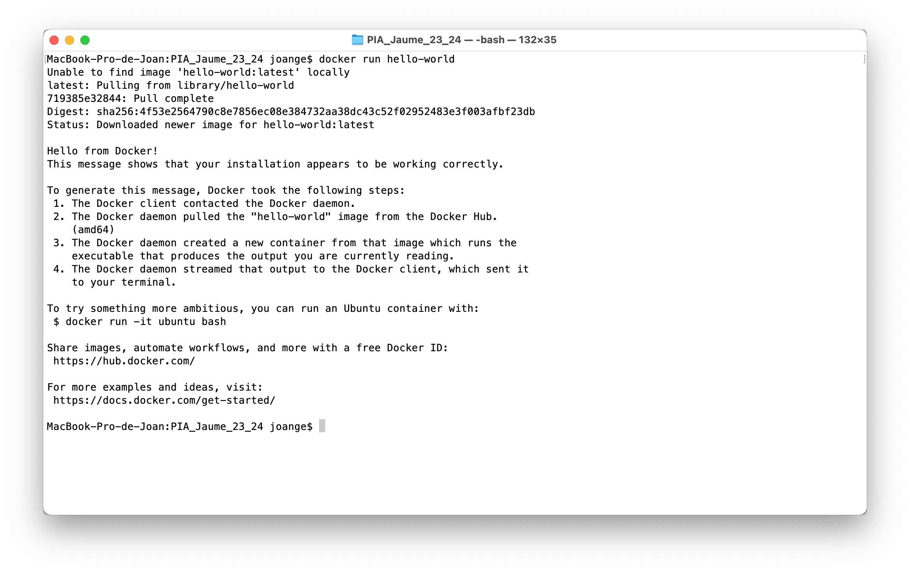
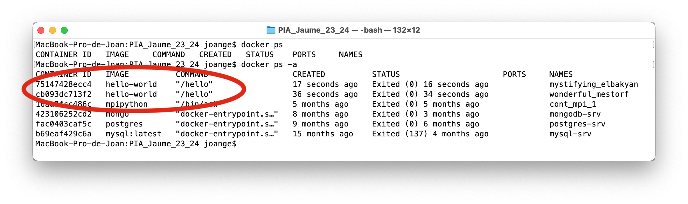
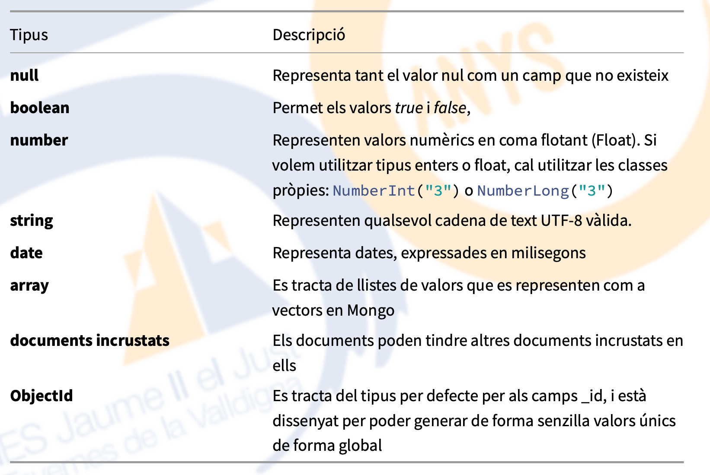
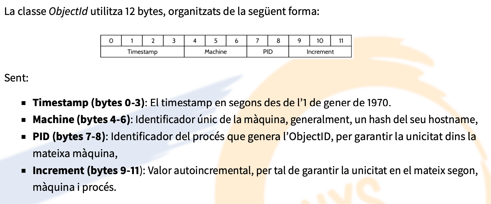

2. Contenidors. Bases de Dades
1. Què és Docker
Docker (segons la wikipèdia) és un projecte de codi obert que automatitza el desplegment d’aplicacions dins de contenidors de programari, i proporciona una capa addicional d’abstracció i automatització de virtualització d’aplicacions en múltiples sistemes operatius. Docker fa ús de les característiques d’aïllament de recursos del nucli de Linux, tals com els cgroups i els namespaces que permeten que contenidors independents s’executen dins una mateixa instància de Linux, evitant la sobrecàrrega d’iniciar i mantenir màquines virtuals.
Els principals avantatges de l’ús de contenidors són:
- La flexibilitat, ja que fins i tot les aplicacions més complexes poden incloure’s als contenidors.
- La poca càrrega que suposen per al sistema,al compartir el mateix kernel que l’amfitrió.
- La possibilitat de desplegar actualitzacions en calent.
- La portabilitat, ja que es poden desenvolupar localment, desplegar al núvol i llançar-los en qualsevol lloc.
- L’escalabilitat, ja que permet incrementar automàticament rèpliques dels contenidors,
- Els serveis en contenidors poden apilar-se
on the fly
Al llarg del document parlarem sobre imatges i contenidors, pel que convé aclarir aquests conceptes.
- Una imatge és un paquet executable que inclou tot allò necessari per executar una aplicació: el codi, l’entorn d’execució, llibreries, variables d’entorn i fitxers de configuració. Aquesta imatge sempre roman fixa i immutable, a menys que la creem de nou.
- Un contenidor, per la seua banda és una instància d’una imatge en execució: allò que es crea quan posem en marxa una imatge. Podríem dir que un contenidor és a una imatge el que un procés a un programa. El contenidor varia al llarg de la seua vida.
Recordatori
Si procés==programa en execució llavors contenidor==imatge en execució
1.1. Instal·lació
No anem a entrar en detall però cal tenir instal·la el subsistema Docker a la nosta màquina nativa (anomenat Docker engine) i podeu trobar tota la documentació ací https://docs.docker.com/engine/install/. Consideracions:
- Hem de configurar el sistema per a que el dimoni o servei de Docker arranque amb el sistema, o l'hem d'arrancar cada cop que ho necessitem.
- Podem afegir eines gràfiques per a la gestió de contenidors ja creats.
1.2. Contenidors Individuals
Les imatges precreades de Docker estan emmagatzemades al que es coneix com el Docker-hub accessible desde https://hub.docker.com. Les imatges estan alli emmagatzemades, i per a fer-les servir, òbviament hem de descarregar-les.
Un cop descarregades (el que es coneix com fer un pull) les imatges es guardaran a la cache del nostre equip, per si es necessiten més endavant per a fer nous contenidors.
Quan i com baixar les imatges
Realment no cal baixar les imatges per a desprès fer un contenidor, ja que docker, si no troba la imatge en local, automàticament farà el pull i la descarregarà.
1.3. Creant contenidors
Per a crear i arrancar un contenidor a partir d'una imatge el comandament és docker run nom_imatge.

Pot observar-se que primer es descarrega i desprès l'executa. Si ho executem varies vegades, podem observar que està creant-se cada cop un contenidor distint.

Això si és per a algo solt no és problema, però pensem en un contenidor que el posem en marxa, guardem certa informació (com un SGBD) i l'aturem. Si el tornem a arrancar (amb docker run) es perdrà tot el que teniem, ja que es crea de nou.
La millor solució és assignar-li un nom:
| Bash | |
|---|---|
i per a següents vegades que l'executem, simplement arrancar-lo, amb start:
| Bash | |
|---|---|
Podem veure els contenidors que tenim en marxa amb docker ps. Quan vullguem aturar-lo podem fer-ho amb.
| Bash | |
|---|---|
Podeu trobar més informació a la documentació oficial, així com a la documentació adjunta que us facilitem.
Per acabar amb aquest apartat, podem veure una crida més complexa:
| Bash | |
|---|---|
Que realitza:
- un servei en segon pla (-d) de la imatge de mysql. Si no es diu res, agafarà la última versió (mysql:lately)
- Un contenidor de nom mysql-srv
- Amb una redirecció de ports (-p) del port 3308 de la màquina amfitriona al port 3306 del contenidor, on escoltarà mysql.
- Munta un volum (-v) on la ruta /srv/mysql es muntarà en /var/lib/mysql.
- S'assigna una variable d'entorn (-e), amb el password del administrador de mysql.
1.4. Crear els nostres contenidors Dockerfile i docker-compose
Per a crear un contenidor personalitzat, hi han diverses maneres de fer-ho. La complicada és: creem un contenidor amb la imatge buida, l'arranquem, transferim dins d'ell els arxius que necessitem, actualitzem els paquets que calguen, ja el tenim a punt. Com podeu intuir, podem fer-ho millor i més fàcil.
1.5. Dockerfile
L'opció és automatitzar tota aquesta tasca en el que es coneix com un Dockerfile. Un Dockerfile és un fitxer de text que conté un script amb una sintaxi concreta per a indicar totes les seqüencies per a muntar un contenidor. Ahí per exemple és on podrem muntar un contenidor "net" i afegir-li tot el contingut que necessitem per a desplegar-lo on calga.
Anem a estudiar-ho amb un exemple bàsic. Suposem que volem crear un contenidor amb una distribució d'Ubuntu, a la qual li instal·larem l'editor nano (que no ve per defecte)
| Docker | |
|---|---|
Aquest fitxer el guardarem amb el nom Dockerfile. Llavors per crear la imatge i llançar el contenidor amb el nom que vullguem (ubuntunano en aquest cas) podem fer:
| Bash | |
|---|---|
Això crea una imatge i llança el contenidor.
Ara et toca a tu
Implementa el contenidor anterior amb el nano fent-ho amb els següents passos:
- Crea el contenidor sense el nano
- Llanç'l i entra a la seua consola. Comprova que no te l'editor nano
- Crea'l de nou amb el nano
- Llança'l, entra i comprova que ara si tenim el nano.
1.6. docker-compose
Cas de necessitar llançar diversos contenidor per a treballar junts, com per exemple un per a una aplicació i altre per a la BBDD, donat que s'han de comunicar, podem recòrrer a docker-compose, que ens permet, junt a els Dockerfile, crear i orquestrar contenidors.
Aquesta orquestració s'indicarà en un fitxer anomenat docker-compose.yml.
Note
El format aquest, anomenat YAML és un nou estandar o variant de formats del tipus atribut-valor com poden ser els fitxers de properties o formats json
La manera habitual de treball és crear aquest fitxer a l'arrel de la carpeta de treball. En ell a banda de informació de versió i demés, s'especificaran els serveis que anem a muntar, deixant i/o creant una subcarpeta per cada servei que anem a fer. En l'arrel de cada carpeta dels serveis, crearem un Dockerfile amb la configuració personalitzada i pròpia de cada servei. Al docker-compose.yml indicarem els mecanismes de comunicació entre contenidors.
Carrega la última versió de mysql i li assigna el password a l'administrador
Dockerfile per aplicació web Python
On l'anterior:
- Carrega la versió 3 de python
- Establix la carpeta de treball dins del contenidor
- Copia el fitxer de text
requirements.txt. Aquest fitxer conté les dependències de l'aplicació python. - Instal·la dits requeriments
- Aquest copy copia TOT el de l'arrel de la carpeta de treball (el projecte) a la carpeta de treball dins del contenidor (
/usr/src/app) - Per últim, arranca l'aplicació
docker-compose.yml que munta els dos anteriors
Respecte a l'anterior:
- La versió és opcional
- Es defineixen dos serveis:
web:- S'indica que dins de la subcarpeta
/webestarà el dockerfile - Aquest contenidor deixarà exposat el port 5000
- Aquest contenidor tindrà un enllaç per a comunicar-se directament amb el contenidor
db. Això vol dir que, dins del contenidorweb, on posemdbestà referint-se a l'adreça interna del contenidor de la base de dades. Això també passarà dins del programa
- S'indica que dins de la subcarpeta
db- S'indica que dins de la subcarpeta
/webestarà el dockerfile
- S'indica que dins de la subcarpeta
I un cop fet?
Un cop creada la estructura de carpetes, i demés:
- Per a crear el pack de contenidors, farem un
docker-compose build - Per a llançar el pack de contenidors, farem un
docker-compose up
1.7. Contenidors de BBDD amb mongoDB
Per a treballar amb la base de dades, ens la instal·larem dins d'un contenidor, deixant exposat el seu port per defecte 27017. De mongo podriem estar treballant molt de temps, però estudiarem el més bàsic per treballar, com és connectar-se, importar/exportar col·leccions de documents i les operacions CRUD (Create, Read, Update i Delete).
Per crear el nostre servidor de BBDD mongo ho farem amb el comandament:
| Bash | |
|---|---|
Atenció
- Les dades de connexió son
rootamb passwordtoor - El port 27017 de la màquina amfitriona es redirigeix al port per defecte dins del contenidor
- Per a aturar i arrancar de nou el mateix contenidor ho farem amb
docker start|stop mongodb-srv
2. mongoDB
MongoDB és una base de dades orientada a documents, basada en l'emmagatzemament de les seues estructures de dades en documents de tipus JSON amb un esquema dinàmic. Tot i que començà el desenvolupament per l'empresa 10gen, avui en dia és un projecte de codi obert, amb una gran comunitat d'usuaris.
Un servidor MongoDB pot tindre diverses bases de dades, i cadascuna d'elles té un conjunt de col·lecions, que podríem equiparar a les taules d'una BD relacional. Cada col·lecció emmagatzema un conjunt de documents JSON, format per atributs clau-valor, que vindríen a ser els registres d'una base de dades relacional.
A grans trets, podríem establir les següents relacions:
| Model relacional | MongoDB |
|---|---|
| BD Relacional | BD Orientada a documents |
| Taula | Col·lecció |
| Registre/Fila | Document JSON |
| Atributs/Columnes | Claus del document JSON |
Veiem un xicotet exemple de la col·leció Pelis amb dos documents:
| JSON | |
|---|---|
Com veiem, cada document, de tipus pel·lícula té els seus propis atributs, els quals no tenen per què coincidir entre ells. Una altra característica, es que, com podem vore, tenim la informació sobre el director dins el propi document, i no en un altre document i relacionada amb aquest, com sería el cas de les taules.
2.1. JSON i BSON
Com ja sabem, la unitat bàsica d'informació amb què treballa MongoDB és el document, que seria l'equivalent a un registre en un model relacional. Es tracta de documents JSON, formats per parells clau-valor i que representen la informació d'una manera força intuïtiva. Els servidors MongoDB, per la seva banda, emmagatzemaran aquestes dades en format BSON (JSON binari), un format de serialització binari.
Pel que fa als documents JSON per a MongoDB, cal tenir en compte alguns aspectes:
- Pel que fa a les claus:
- No poden ser nules.
- Poden contenir en qualsevol caràcter UTF-8, excepte els caràcters
.o$. - Distingeixen entre majúscules i minúscules.
- Han de ser únics dins del mateix document.
- Pel que fa als teus valors:
- Poden ser de qualsevol tipus permesos: enter, real, text, booleà, NULL, Objecte o Array
- Pel que fa al document:
- Ha de tenir un camp
_id, amb un valor únic, que actuarà com a identificador del document. - Si no especifiquem aquesta clau, MongoDB la generarà automàticament, amb un objecte de tipus
ObjectId.

i respecte als identificadors que insereix mongo automàticament:

2.2. Importar i exportar col·leccions
Un cop tenim instal·lat el servidor, necessitem accedir a ell per a crear, manipular i consultar informació. Per poder fer-ho necessite un client per a la base de dades. Mongo ens ofereix ferramentes per a connectar-se per consola, que les database-tools i podeu trobar documentació ací https://www.mongodb.com/docs/database-tools/ de com fer-les servir. Bàsicament aquestes eines ens permeten el importar col·leccions a la BBDD (mongoimport), extreure les cole·leccions (mongoexport) i connectar-se al servidor amb un shell interactio (mongo).
Per a importar una col·lecció de documents, farem servir el comandament mongoimport, amb la sintaxis
| Text Only | |
|---|---|
Tenir en compte:
- Si la BBDD no existeix, es crearà.
- Si la col·lecció no existeix la crearà
- Si la col·lexió existeix, afegira els elements del fitxer, a menys que posem l'opció
--drop, que elimina la col·lecció abans de refer-la
Si volem exportar una col·lecció, l'equivalen seria:
| Bash | |
|---|---|
2.3. Inserir documents
El comandament per a inserir un document pot ser:
Es retornen els ObjectID dels elements inserits. Espai que com mongo no te estructura es permet qualssevol inserció com a vàlida.
2.4. Consultes de documents
Per a fer consultes farem servir la sintaxi:
| JavaScript | |
|---|---|
on:
- El criteri és un json on especifiquem els valors de la búsqueda, com un json
- Els camps a mostrar indiquem tots aquells camps que volem mostrar com
camp:1ocamp:0. Aquest camp és opcional, i es mostren tots cas de no posar-ho
Exemples autoexplicats de consultes
Imaginem que tenim una col·lecció de pel·lícules amb l'estructura vista anteriorment
Per a fer consultes més complexes podem fer servir els operadors de comparació:
| Operador | Descripció |
|---|---|
$eq |
Igual |
$neq |
Distint |
$lt |
Menor que |
$lte |
Menor o igual que |
$gt |
Major que |
$gte |
Major o igual que |
i llavors
| JavaScript | |
|---|---|
No entrarem en més detall en consultes més complexes, ja que no correspon al curs.
2.4.1. Ordenació
El resultat d'una consulta sempre serà un array de documents, o un sol en cas de que sol se'n retorne un. Moltes vegades voldrem ordenar-ho per veure els resultat d'alguna manera. Per a fer-ho, no existeixen ferramentes dins de la consulta, però podem recòrrer al llenguatge javascript, que és el que enten mongoDB, i invocar al mètode sort() que tenen les col·leccions.
La funció llista.sort({criteri_ordenació}) aplica el criteri d'ordenació a la llista. Aquest criteri és un objecte amb la estructura {clau_ord:[1|-1]}. El que fa es ordenar la llista per l'atribut clau_ord, sent ascendent si posem un 1 o descendent si posem un -1. Si posem més d'un atribut, s'ordenarà pel primer, i en cas d'empat pel segon, i així.
Examples d'ordenació
| JavaScript | |
|---|---|
2.5. Actualitzacións
Per a modificar algun registre que existeix prèviament en la BBDD, es farà amb el update:
| JavaScript | |
|---|---|
Cosideracions:
- Si no posem el criteri de búsqueda, deixant-lo en blanc (
{}) s'actualitzaràn tots els documents. -
La operació d'actualització pot ser de varios tipus:
-
$setestableix un valor a un atribut. Si existeix el modifica, i si no existeix l'afig $unsetslimina un atribut del document$incincrementa l'atribut tant com indiquem. Sols per a números$pushafig un element a l'atribut, cas de ser un vector$pullelimina un element(s) de l'atribut, cas de ser un vector
Exemple de modificacions
Com hem comentat, podriem aporfondir molt més, però per al curs és suficient. En els mòdus de dades (BD i BDA) segur que aprofundiu molt més
2.6. Eliminar bases de dades
Si volem eliminar elements d'una col·lecció, disposem del comandament deleteXXX:
Exemples d'esborrats
```js // esborra el primer usuari de 39 anys db.usuaris.deleteOne({edat:39})
// esborra tots els usuaris de 39 anys db.usuaris.deleteMany({edat:39})
// esborra tots els usuaris db.usuaris.deleteMany({})
// elimina tota la col·lecció (documents i estructura) db.usuaris.drop()
Si per a lgun motiu volem eliminar una BBDD sencera amb totes les col·leccions que conté, podem fer-ho amb el comandament:
| JavaScript | |
|---|---|
Recordar que si no has seleccionat cap base de dades, eliminarà la base de dades de test (la que està seleccionada per defecte).
2.7. pymongo: treball amb mongoDB des de Python
Per a accedir a mongoDB desde programes es fa servir la estructura mongoclient, i és pymongo la llibreria encarregada de proporcionar-nos dita funcionalitat. Sempre que ens connectem a una BBDD, independentment del llenguatge de programació, el fluxe de treball serà:
- Carregar el driver (mongoclient)
- Crear la cadena de connexió, on indicarem on està el servidor, usuari i contrassenya, i si escau la BBDD
- Seleccionar la BBDD per defecte
- Crear la consulta|modificació que volem llançar
- Executar-la
- Recuperar i processar els resultats, si és que hi han
- Tancar la connexió abans d'eixir del programa.
La documentació completa la podeu trobar a la pàgina oficial https://pymongo.readthedocs.io/en/stable/
Anem a veure ara pas a pas com es faria:
3. mongoengine
MongoEngine és un ODM (Object-Document Mapper) per a Python per a treballar amb MongoDB. Pots trobar tots els detalls en https://mongoengine-odm.readthedocs.io
Un ODM (Object-Document Mapper) és un concepte similar al ORM (Object-Relational Mapper), però aplicat a bases de dades de documents en lloc de bases de dades relacionals. És una biblioteca o eina que mapeja documents emmagatzemats en bases de dades no relacionals (com MongoDB) a objectes de programació dins d'una aplicació. Això facilita la interacció amb la base de dades, proporcionant un mecanisme per treballar amb els documents com si fossin objectes natius del llenguatge de programació.
3.1. Característiques principals
-
Mapeig de documents a objectes: Els documents emmagatzemats en format JSON, BSON o altres formats es converteixen en objectes del llenguatge de programació.
-
Simplificació de la interacció amb la base de dades: L'ODM permet executar operacions com crear, llegir, actualitzar i eliminar (CRUD) sense necessitat d'escriure consultes directes en el llenguatge de la base de dades.
-
Validació i esquemes: Molts ODMs ofereixen eines per definir esquemes que validen els documents abans de guardar-los a la base de dades.
-
Gestió de relacions (si s'escau): Tot i que les bases de dades de documents no són relacionals, molts ODMs permeten definir relacions entre col·leccions de documents.
3.2. Connectant en la BBDD
Per connectar-se a una instància en execució de mongod, utilitzeu la funció connect():
Les connexions en MongoEngine es registren globalment i s'identifiquen amb àlies. Si no es proporciona cap àlies durant la connexió, s'utilitzarà "default" com a àlies. Si volem connexions a diverses BBDD hauriem de fer:
posteriorment quan definim els elements a guardar haurem d'indicar l'àlies de la BBDD on el volem guardar.
3.3. Definint les nostres classes/Documnets
La idea és crear unes classes en Python que farem servir per a guardar-les directament en els documents de la BBDD mongo. Per a fer-ho definirem els atributs de les classes com a elements Fields de mongoengine especialitzant-los a alguns dels concrets IntField,FloatField,URLField, StringField. Tens el llistat complet ací
Aquestes classes:
- han d'heretar de la classe de mongoengine
Documentper fer servir els mètodes de guardar i demés. - Deuen de definir-se els mètodes a partir de constructors dels tipus comentats anteriorment.
Vegem un primer exemple:
| Python | |
|---|---|
i el següent usuari serà emmagatzemant en la base dades referenciada en la segona manera:
| Python | |
|---|---|
Ara ja podem operar amb la base de dades, però directament amb els objectes creats. Mirem el següent codi comentat:
Atenció
- Quan ens connectem, s'indica el nom de la BBDD. Si no existeix es crea la BBDD.
- El mateix passa en la col·lecció, si no existeix, la primera vegada que s'insereix es crearà.
- Tots els objectes (documents) creats tenen un camp
idque conté el objectID assignat per mongo.
Per a búsquedes i filtrat de documents podem fer servir, afegint al nom dels atributs el seguients operadors
__lt: Menor que (less than).__gte: Major o igual que (greater than or equal to).__lte: Menor o igual que (less than or equal to).__ne: Distint de (not equal).__in: Contingut en una lista de valores.__nin: No contingut en una lista de valores.__contains: un text conté a altre.__icontainsper a fer-ho case insensitive.
4. Annex. Protegint dades sensibles. Els arxius .env
Un arxiu .env és un fitxer de text pla que conté variables d'entorn (environment variables) que es poden utilitzar en una aplicació. Es fa servir principalment per emmagatzemar informació sensible o configuracions que no volem incloure directament en el codi font, com per exemple:
- Claus API
- Credencials de bases de dades
- Configuracions d'entorn (producció, desenvolupament, etc.)
Els arxius .env solen tenir el següent format:
Aquest format és senzill, i cada línia defineix una variable d'entorn amb un nom i un valor separats per =. Els comentaris es poden afegir amb # al principi de la línia.
4.1. Per què utilitzar arxius .env?
- Seguretat: Permeten evitar exposar informació sensible al repositori de codi.
- Flexibilitat: Permeten canviar configuracions sense modificar el codi.
- Portabilitat: Faciliten la configuració del projecte en diferents entorns.
4.2. Com utilitzar arxius .env amb Python
El que necessitarem és carregar aquesta informació des dels nostres programes. Vejam com
Instal·lar la biblioteca python-dotenv
La forma més fàcil de treballar amb arxius .env a Python és utilitzant la biblioteca python-dotenv. Per instal·lar-la:
| Text Only | |
|---|---|
Crear un arxiu .env
Crea un fitxer .env al directori arrel del projecte amb el següent contingut d'exemple:
Carregar les variables d'entorn en el codi Python
Fes servir la biblioteca python-dotenv per carregar les variables d'entorn al teu programa Python. Aquestes variables estaran disponibles mitjançant os.environ.
Gestionar valors predeterminats
Si una variable no es troba definida al fitxer .env, pots especificar un valor predeterminat:
| Python | |
|---|---|
Evitar que l'arxiu .env es publiqui a github
Afegeix el fitxer .env al .gitignore per evitar que sigui inclòs en el control de versions: